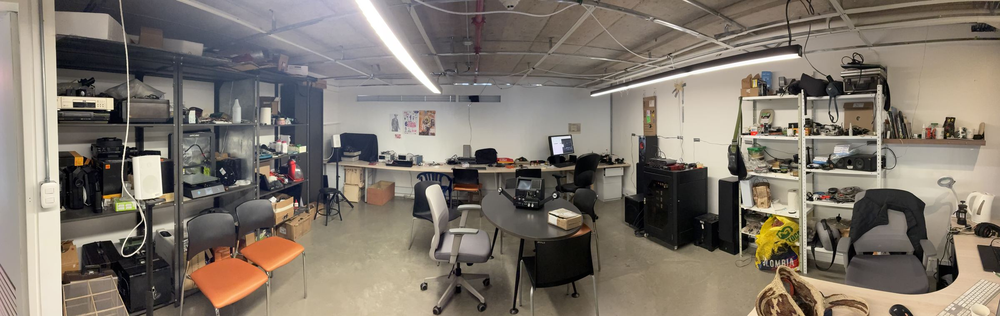

medialab@puj:~$ cat sobre-el-lab.txt
MEDIA LAB/ PUJ
Nacido en 2020 como Re:MediaLab en la Facultad de Artes de la Pontificia Universidad Javeriana, fruto de una investigación liderada por el profesor Enrico Mandirola, el laboratorio se integra en octubre de 2026 a la red Media Lab / Iberoamérica y se transforma en MEDIA LAB/ PUJ.
Desde su origen, la Re:Mediación ha sido su eje de investigación y creación: un tránsito entre la imagen fotoquímica del cine analógico y las realidades mixtas y aumentadas, acompañado de sonidos sintetizados. Es una forma de resistir, con el cuerpo y con la materia, la obsolescencia tecnológica y orgánica programada.
medialab@puj:~$ cat re-mediaciones.txt
Re:Mediaciones
// Encuentro de Artes Electrónicas y del Cuerpo
[2024] Primera edición. Un grupo de docentes y artistas-formadores abrió un espacio para compartir con pares y público las preguntas que nos convocan: una discusión crítica, creativa y experimental sobre las relaciones entre las prácticas intermediales, las electrónicas y las del cuerpo. Pensamos los medios desde el Sur Global y hacia él, y nos preguntamos por los modos de hacer, ver, escuchar y pensar la imagen-sonido, y por las subjetividades que ese hacer configura. El encuentro buscó entrelazar saberes locales y tradicionales con los medios electrónicos, analógicos, digitales y (no) orgánicos, cuestionando las jerarquías con que se han entendido los medios. Aspiramos a que la Facultad de Artes sea un centro de re:interpretación, re:apropiación y re:experimentación.
[2026] Segunda edición. En diálogo con el III Congreso de Bioacústica y Ecoacústica (septiembre–octubre de 2026), Re:Mediaciones se vuelve escucha. Invitamos a salir del campo científico y a encontrarnos con el arte, la comunicación y las ciencias sociales para abordar la escucha como mediación para reconocer lo «otro»: otras especies, otros paisajes, otras comunidades, otras expresiones tecnológicas. Nos reunimos en torno a la acustemología, la grabación de campo, la escucha afectiva y la escucha fenomenológica.
medialab@puj:~$ ./como-suena.sh
¿Cómo suena la Re:Mediación?
Re:Mediación nombra una postura que empezó a gestarse a comienzos del siglo XX, cuando los desastres ambientales y sociales heredados de la revolución industrial hicieron urgente volver a re:pensarnos como humanos en relación con lo no-humano: el multiverso de cuerpos naturales y artificiales con los que convivimos a diario, ya sea vegetal, animal, fungi, mineral o máquina.